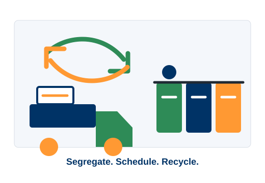

Citizen Services
Waste management,
reimagined.
A prototype portal for responsible waste pickup, live collection tracking, segregation guidance, digital recycling certificates and citizen green rewards.

Environmental Impact
Portal Activity Summary
These figures are calculated live from the pickup records stored by this prototype portal. They are demonstration data and do not represent official government statistics.
Real-Time Fleet Operations
Live Garbage Collector Tracking
Track municipal garbage collection vehicles navigating city routes with real-time GPS simulation, dynamic ETA countdowns, and automated status milestones.
Citizen Services
Services Available on WasteLoop
Waste Collection Services
Schedule dry, wet, e-waste, plastic, metal, paper and hazardous waste pickup for a future date.
Live Track Collection
Watch the allocated collector vehicle approach your home with live distance, ETA and status.
Smart Waste Disposal Guide
Search any item to learn its waste type, recycling status, correct disposal and Green Points.
Environmental Impact
Track total waste recycled, plastic diverted, paper recovered and estimated CO2 saved.
Digital Recycling Certificate
Completed pickups unlock a printable government-style certificate with a verification number.
Grievance Redressal
Register and track complaints about pickup delay, missed collection or collector behaviour.
Latest Updates